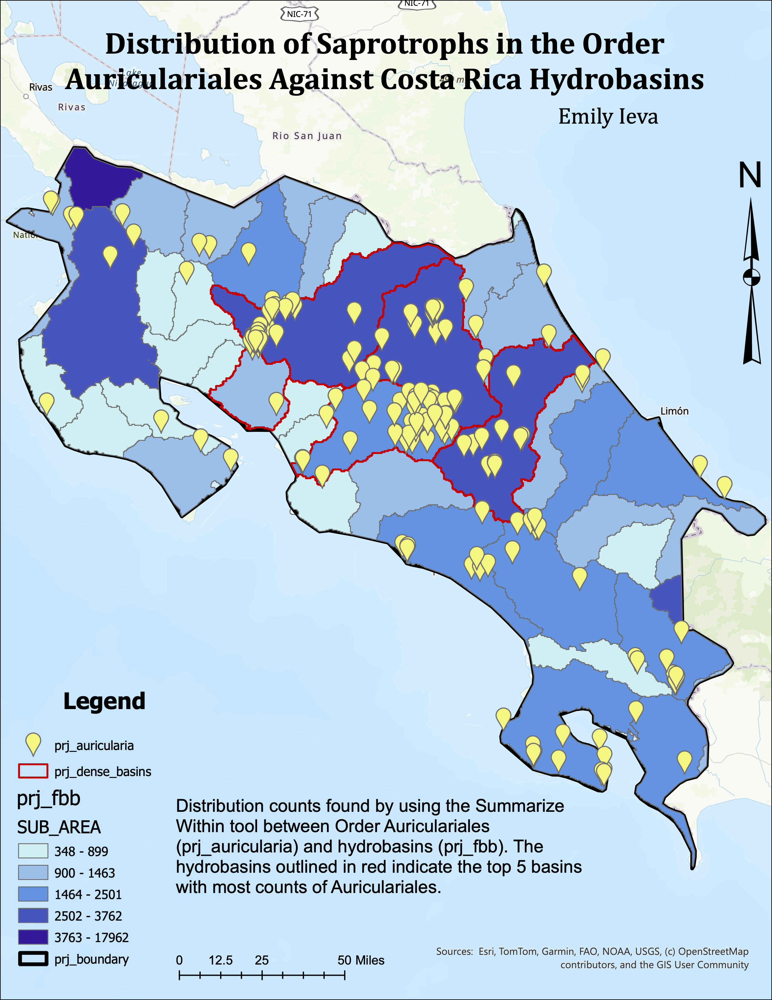
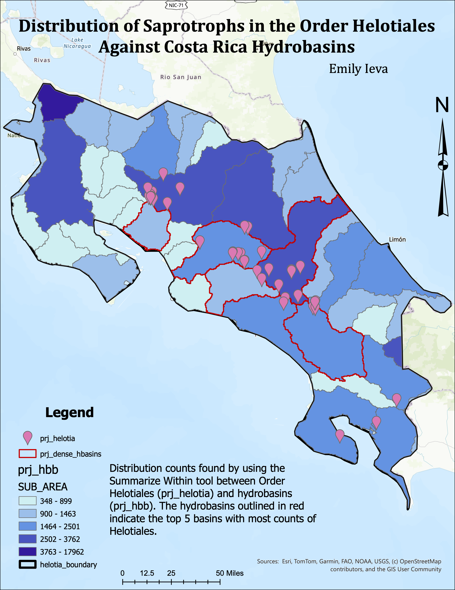
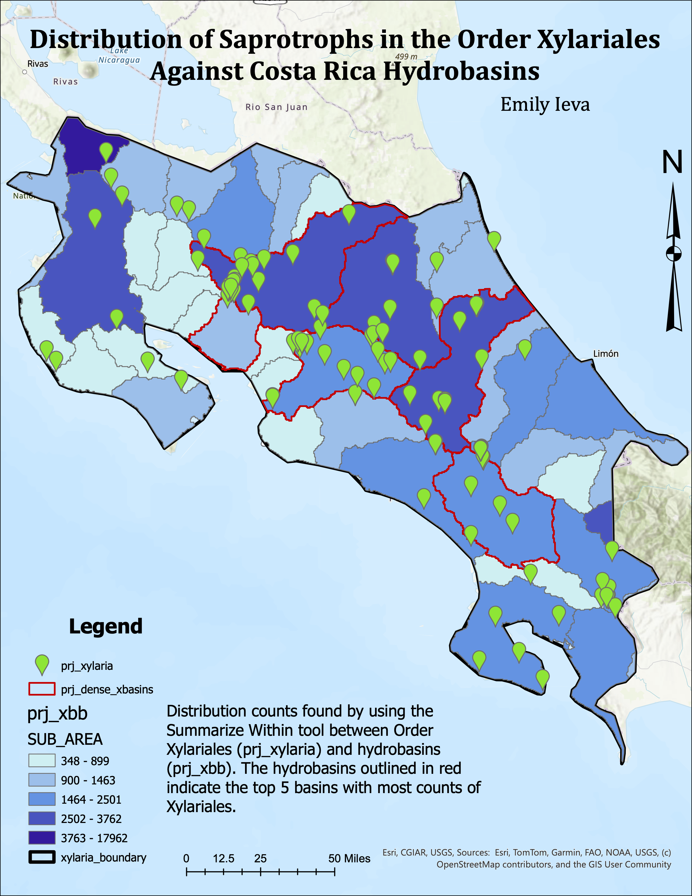
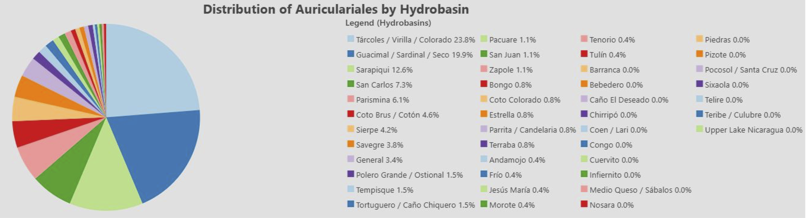
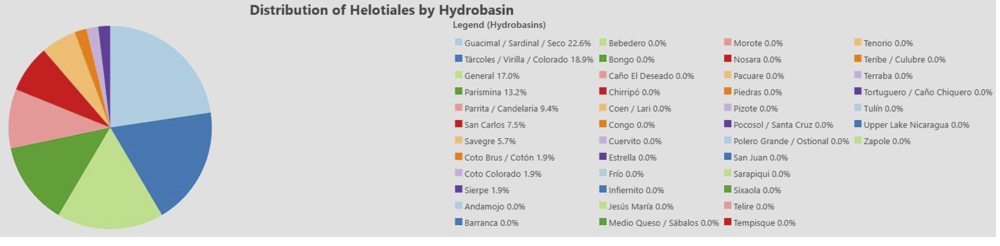
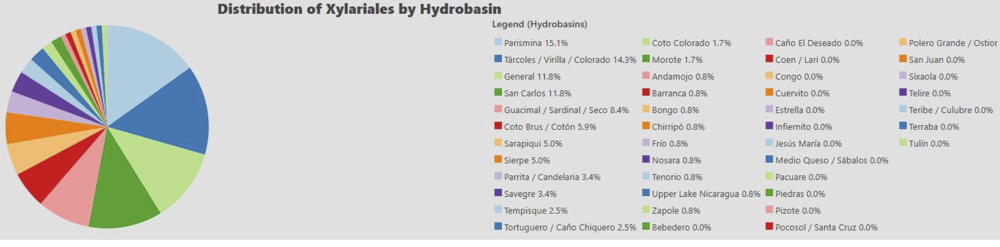

Mapping Saprotrophic Mushroom Distribution Against Hydro Basins in Costa Rica
This project examines the distribution of three common saprotrophic fungus orders (Auriculariales, Helotiales, Xylariales) observed against hydrological basins in Costa Rica, with a focus to determine habitat preferences where applicable.
Project Overview
This project integrates hydrological basin datasets with observed species data from iNaturalist to determine distribution patterns in Auriculariales, Helotiales, and Xylariales fungus orders.
Spatial Analysis



Distribution Results



Tools & Methods
ArcGIS Pro, Summarize Within, Table and Data Management Tools, and Excel.